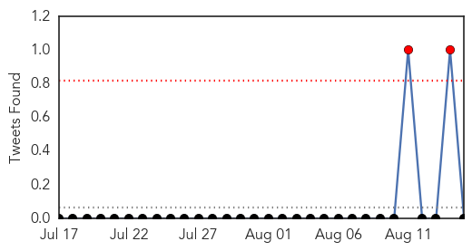
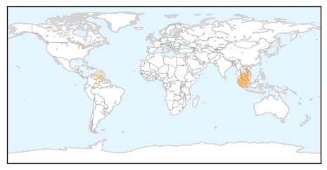
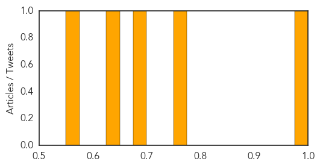
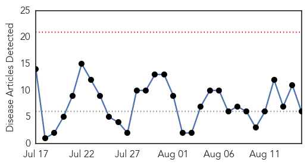
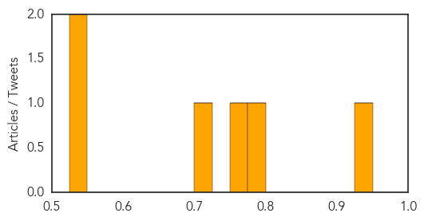

Dengue Fever
30-Day Web Trend
0 alerts, 0 warnings
30-Day Twitter Trend
0 alerts, 0 warnings

Article Locations
Article Confidences
Top Articles:
- 0.995
- Dengue fans fears in Malaysia
- 0.773
- 10 things about: Dr Bina, head of the Penang Epidemiology Intelligence Programme unit
- 0.679
- Rural Health Centers Remain Underfunded, Under-Prepared
- 0.635
- Dengue testing machine not functional at District Hospital
- 0.571
- Reports of Cancer Medicine Shortages in Venezuela Worrisome
Top Tweets:
-
No tweets found for Aug 15, 2015
West Nile Virus
30-Day Web Trend
0 alerts, 0 warnings

30-Day Twitter Trend
1 alerts, 0 warnings

Article Locations
Article Confidences
Top Articles:
- 0.939
- Florida Stories
- 0.792
- West Nile Virus Found in Greenwich Mosquitoes
- 0.753
- Orange County Horse Treated for West Nile Virus
- 0.712
- Medina County: Mosquitos test positive for West Nile virus in Wadsworth
- 0.546
- Pittsfield: Mosquitoes in outer West Street area test positive for West Nile virus
- 0.541
- West Nile on the rise
Top Tweets:
-
No tweets found for Aug 15, 2015